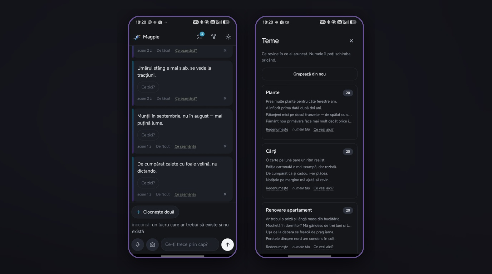
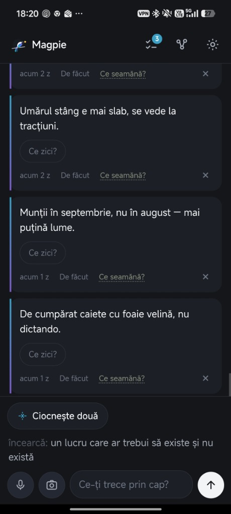
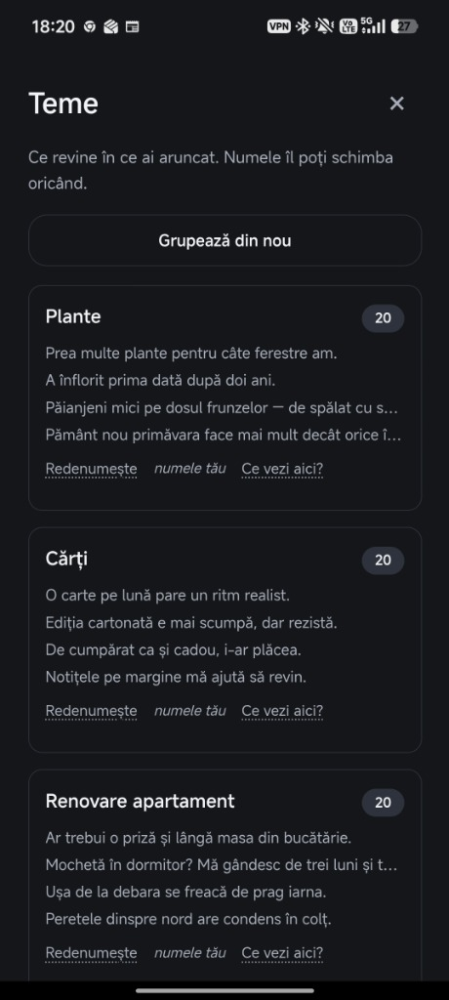
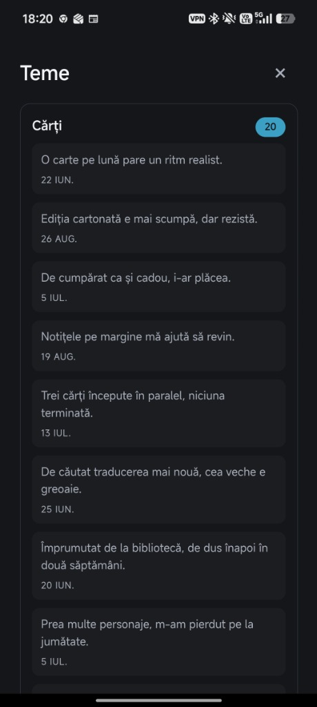
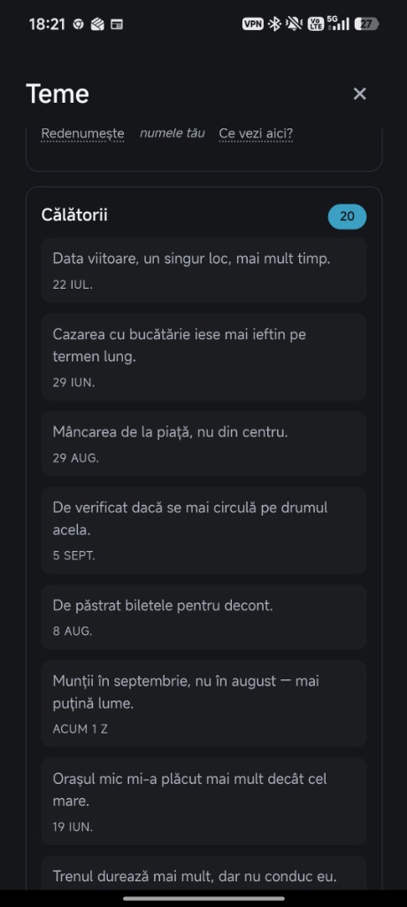

Alltagshelfer
Mișcare
Finde etwas Bewegung für heute – mit der Ausrüstung, die du schon hast.
Ein Platz für flüchtige Gedanken, Fotos und Sprachnotizen, bevor sie verschwinden.

Werfen Sie Reste hinein. Es stellt sich heraus, was sie ergeben.
Text, Bilder und Stimme. Der Punkt ist, dass das Aufzeichnen eines Gedankens nichts kostet – kein Titel, keine Kategorie, keine Tags – und dass alles, was Magpie anschließend daraus macht, oben bleibt, anstatt sie zu ersetzen.
Die Benutzeroberfläche und die Antworten von Magpie sind auf Rumänisch. Die Leute, die es verwenden, denken auf Rumänisch, und das Lesen einer zweiten Sprache ist ein Problem – und das ist das Einzige, was diese App beseitigen soll.




Finde etwas Bewegung für heute – mit der Ausrüstung, die du schon hast.

Zeige, wohin Dinge fließen. Erstelle und exportiere Diagramme im Browser.

Steuere durch Gravitationstrichter in einem Retro-Arcadespiel mit Physik.